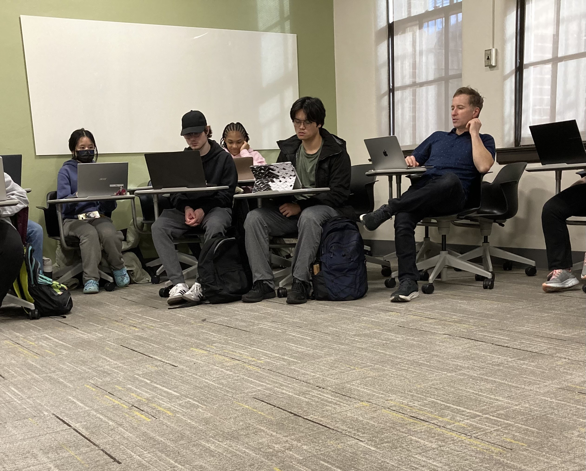
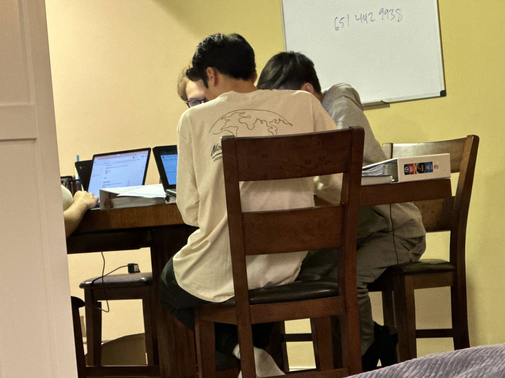
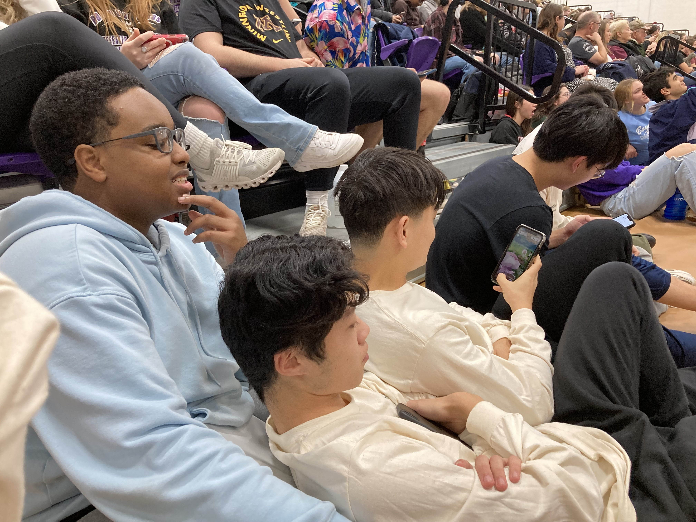
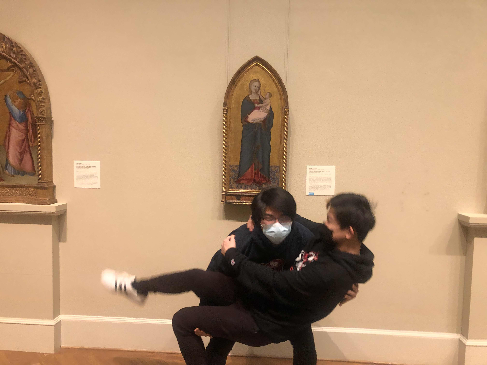

Taken by Ellen Guo at MVHS 12/1/23
This photo intends to capture Mr. Shogren conducting. As a male director and conductor, Mr. Shogren follows traditional gender norms in conducting. Out of the United States's top 20 orchestras, only one is directed and conducted by a woman. This position of the highest leadership over an orchestra is traditionally seen as a man's role. While most people may not explicitly frown upon a female conductor and director today, orchestra players, audience members, and other staff may still subconsciously or privately doubt her abilities. They may be biased against her, devaluing her status and thinking that she isn't as good of a conductor as her male counterparts even though she is just as good, if not better. The behaviors resulting from these implicit biases are one way covert sanctions are placed on women to follow traditional gender roles. Personally during my time as a musician, I have only played under one female conductor who was also the director. I have also never been conducted by a non-white woman, and have been conducted by a non-white male only once. Oftentimes, I think socioeconomic concerns, along with the lack of gender and racial representation within conducting and directing, is what keeps more diverse groups from pursuing those routes.
Taken by Ellen Guo at Scott Hall, UMN-St. Paul 11/27/23
This is a picture of how a few classmates in my microbial engineering class sit. My female classmate sat with her legs together, a position traditionally seen as proper for a lady. On the other hand, my two male classmates are sitting with their knees apart. If a woman "manspreads," it is still seen as improper today, whereas it's okay for a man to "manspread." In fact, "manspread" being a term at all shows how gender expectations are still ingrained into our society. Attatching "man" to the term associates it with men; in this case something men can do, but women should not. Despite how the way they are sitting reflects traditional gender roles, the clothes my female classmates wear do not reflect this. The traditional role expectations of dressing like a woman include wearing dresses, blouses, and light "feminine" colors. However, here, my classmate dresses similarly to the other guys, wearing a dark hoodie and gray sweatpants. Ironically, one of the guys sitting in the very back corner is wearing a bright pink hoodie even though pink is a color generally associated with women's wear. Neither of them likely faced any backlash for their clothing choices, showing how most college campuses no longer gender police based on wearing these clothes and colors.
Taken by Ellen Guo at Michael Wang's Basement 12/1/23
At the time this picture was taken, these three boys were talking about how our coach should tie up teammates, force them to watch cartel videos, and then leave them tied up to reinforce toxicity within the team, which they theorized was important for doing well at Nationals. Boys acting or talking more aggresively is accepted by the general public. (Males are also associated with crimes and commit crimes more than double women do.) If my friends and I were loudly discussing the merits of tying up people and forcing them to watch cartel videos, we would probably by ostrasized, called insane, and if there were any teachers nearby, be sent down to the office. On the other hand, people would probably just shake their heads and dismiss those three boys as being silly. The sanctions my friends and I would face and the lack that the boys would face is an example of gender policing, where the people would be reinforcing the gender expectations that girls are not aggressive, which aligns with our socity's social constructions of gender. Furthermore, although not obvious in the image, the boys are all sitting around that table, while the girls are sitting in a different area of Michael's basement. This segregated seating was not assigned by any means, but it always ends up happening that the girls sit with the girls and the boys sit with the boys. This phenomenon begins as soon as most children reach the game stage of socialization when kids are more aware of their positions within society, including their gender and the genders of others. For example, in kindergarten, a girl might shout that a boy has "cooties." The kids are actually just performing within the gender expectations that girls play with girls and boys play with boys. The thought of a girl playing with a boy is treated like a disease. From a young age, our society reinforces these gender norms so that by high school, my girl-friends and I automatically sit in a different section of the basement and we follow sexual scripts when we want to talk to the guys, typically only talking if we have an event partner who is a guy.

Taken by Hannah Losos at Shoreview Community Center 11/16/23
This picture captures the Shoreview City Mayor and Comittee members. This is one example of people both doing and not doing gender; women are wearing blazers and button ups and slacks just as the men are, which does not follow traditional feminine dress. However, none of the women are wearing ties, so they still follow modern dressing norms for women. Similarly to being an orchestra director and conductor, government positions have been traditionally restricted to males only. Even though those overt restrictions are gone today, we see the lasting impacts of how girls and women are viewed in society and how it affects their aspirations. According, to the Center for American Women and Politics, only 25.8% of city mayors are female. The current Shoreview Mayor and several comittee members are women, which breaks gender norms. However, they still feel the pressure to dress and act professionally for their male-dominated titles, which includes dressing in a more masculine manner like trousers, blazers, and darker colors. Despite this, we do see that wearing ties and men's leather shoes are still gender boundaries that the women are unwilling to cross. If the women did wear ties, they would be looked at weirdly and people would wonder if they were not straight or if they did not identify as women. The sanctioning effects of the sameness taboo and breaking gender expectations would probably discourage the women from wearing a tie again. None of these women likely even considered wearing ties while they were getting ready for this event because of how gender affects our every thought, even though we usually do not notice. In our society, gender is one of the things that "Mother Culture" makes unnoticable to most. The women's jewery and fitted blazers that are snatched at the waist are more examples of how the women express their feminity. Overall, this picture captures ways that gender is being done, expressed, and undone in accordance to societal expectations.
Taken by Ellen Guo at Boyceville High School 12/2/23
Just as we have to have rituals for girls to talk with guys to be socially accepted, guys must construct gender rituals to be close physically with each other. This image of two guys lying next to each other in another guy's lap demonstrates this ritual. If they were to unironically cuddle, others would the guys would be percieved as gay or not "normal" in some other sense. By doing it ironically, the guys play it off as being silly, but in reality they are finding ways to be close. Documentaries such as The Mask You Live In demonstrates how society's gender norms like men needing to construct rituals to be emotionally or physically close with each other affects their mental well-being, leading to statistics such as high suicide rates. Men worry, consciously and unconsciously, that they are failing their role performance and attempt to take steps to show off their masculinity, often to the detrimant of themselves and others.
Taken by Ellen Guo at Minneapolis Institute of Art, date unknown
This picture of one guy trying to craddle another guy is another example of constructing rituals to be physically close--this time by imitating a painting. By constructing a ritual for being close first, their behavior reinforces society's masculine expectations. However, it is ironic that the excuse they are using to be close involves traditionally feminine norms of caring for a baby and being a baby. Others happily dismiss this as a bout of boys being silly. If this were between a guy lifting a girl however, people would assume that they are dating. The automatic assumption that a guy carrying a girl and dating demonstrates heteronormativity. On the other hand, if the girl was lifting the guy, people would be doing double takes because the social construction of gender that is constantly fed to us calls for it to be the other way around. In fact, the guy may not even consent to being carried by the girl because he is worried about seeming too unmasculine.